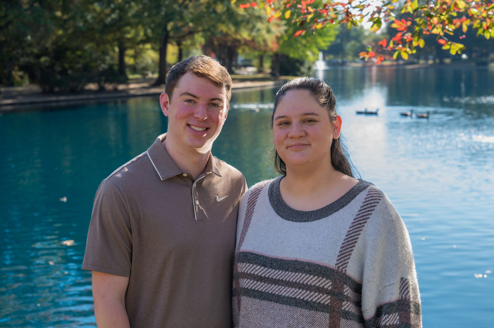

Professional Portraits
Portraits that feel like you, wherever the light is good.
Headshots, senior photos, couples, and creative projects, photographed on location throughout Charlotte and the surrounding area. We'll pick a spot that fits the look you have in mind and build the session around it.
Nearly a decade behind the camera, from film to digital photography, with a focus on natural portraits, genuine moments, and creative use of the environment.
Charlotte-Based • Locally Owned Business • Flexible Locations
Choose Your Session
Choose the session that best fits the amount of time, variety, and coverage you're looking for.
Mini Session
$125
A quick, focused session perfect for headshots and a single look.
- 30 min. Portrait Session
- One Outfit or Setting
- Any Charlotte-Area Location
- 10+ Professionally Edited Photos
- Delivered via Digital Gallery
Most Popular
Standard Session
$200
More time and variety for a complete portrait collection across multiple looks or locations.
- 60–90 min. Portrait Session
- Multiple Outfits or Settings
- Any Charlotte-Area Location
- 20–25+ Professionally Edited Photos
- Delivered via Digital Gallery
What to Expect
Before Your Session
We'll choose a location and talk about the look you're after. Sessions can take place anywhere in the Charlotte area that fits the mood, from campus and parks to storefronts and quiet side streets.
During Your Session
The goal is variety without rushing. I'll guide you through natural poses and a mix of framing, so you leave with a few polished portraits and something that feels unposed.
After Your Session
Your final selections will be professionally edited and delivered through a high-resolution digital gallery, ready to download and share.

Ready for Your Portraits?
Tell me which session you're interested in and when you're looking to shoot.
Book Your Portrait Session